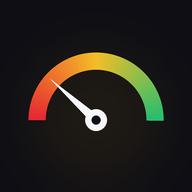

Cockpit
Fakenômetro · ao vivoconectando…
Chave de acesso
Cole a chave do cockpit uma única vez. Ela fica só neste aparelho.
Carregando…
Resumo Diário
O que chegou e o que o robô respondeu no dia, por canal, sem os avisos automáticos. Toque num texto longo para ver inteiro. Só para consulta: nada aqui pede ação sua.
Carregando…
Carregando…
@fakenometro
carregando…
👀 Alcance por dia · 28 dias
🔀 Cruzamentos
📰 Posts
Poste de cima para baixo: a ordem alterna um post que favorece a direita, um que favorece a esquerda e um neutro ou sem prova.
Toque num item para abrir. Salve as imagens (já na ordem do carrossel), copie a legenda, poste no Instagram e marque como publicado: aparece para os dois.
Carregando…
Checagens hoje
–
Do repositório hoje
–
Gasto no mês
–
Economia · 30 dias
–
⚡ Ao vivo
📈 Por dia · 14 dias
Novas (pagas)Repositório
🔁 Mais pedidas · 30 dias
🗳️ Curadoria
🖥️ Servidor
🔎 Qualidade das checagens · 14 dias
Quanto mais fontes reconhecidas e oficiais, melhor; "sem prova" alto demais é sinal de exagero. A régua de fontes e o mapa por tema entraram em 20/10 à noite (dias marcados ●).